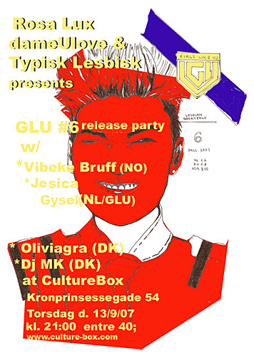

| dunst Recommends: | 13. September 2007 |
 |
|
| Dameulove, Rosa Lux og typisk Lesbisk holder Release fest for det über seje lesbiske magazine Glu 'girls like us' på Culture Box. |
DJ's: Jessica Gysel (Glu/nl), Vibeke Bruff (no), Oliviagra, m/k, Rosa Lux, Dameulove DJ crew Visuals; Typisk Lesbisk. |
| Tilbage |